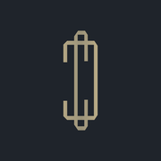

Crisduar
Portal de obra
Ponerlo en la pantalla de inicio del iPhone
- Abre esta página en Safari.
- Pulsa Compartir (el cuadrado con la flecha hacia arriba).
- Elige Añadir a pantalla de inicio y pulsa Añadir.
Saldrá el icono de Crisduar. Al tocarlo se abre directamente el portal. En Android: menú ⋮ › Añadir a pantalla de inicio.
Necesitas haber iniciado sesión en claude.ai con tu cuenta de Crisduar.